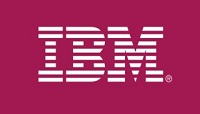

You will be invited – New Hire Lounge
Once you get your invite, join your orientation cohort slack channel! Attention to the e-mail with subject: .... "has invited you to join a Slack workspace"
This Lounge is designed as a virtual space to keep you connected and will allow you to interact with your Onboarding Success Partner and other cohort members.
How do I login to Slack?
 |
What's Next?
In your virtual lounge you'll learn about IBM, access insights, hints and tips to prepare you for your first day. You'll be also be provided resources on how to secure your laptop, IBM badge, email alias and complete your day one paperwork. Getting the invite might take up to 3 business days after you have received this note. |  |
|  |